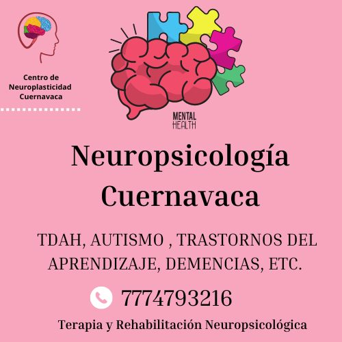

La terapia psicológica juega un papel fundamental en nuestro bienestar emocional y mental.
En un mundo cada vez más acelerado y lleno de desafíos, es crucial cuidar de nuestra salud mental
tanto como lo hacemos con nuestra salud física.
Ir a terapia nos brinda un espacio seguro y confidencial donde podemos explorar nuestros pensamientos, sentimientos y emociones de manera profunda y significativa.
A través de la terapia, podemos adquirir herramientas y habilidades para enfrentar los desafíos de la vida,
superar obstáculos emocionales y mejorar nuestras relaciones.
¡Prioriza tu bienestar mental! Reserva ahora una sesión de terapia psicológica y comienza a cuidar tu salud emocional.
Si quiero!¿Necesitas un espacio seguro para explorar tus emociones y superar desafíos? Nuestra terapia psicológica para adultos está aquí para ayudarte. Reserva una consulta y comienza tu camino hacia el bienestar emocional y mental.

¡Prioriza el bienestar de tus hijos! Reserva ahora una sesión de terapia infantil y brinda a tus pequeños las herramientas necesarias para enfrentar desafíos emocionales.
Fortalece tu relación y redescubre el amor. Nuestra terapia de pareja ofrece un espacio seguro para explorar y resolver los desafíos que enfrentan juntos. Reserva una sesión y comienza el camino hacia una conexión más profunda y duradera.

Recupera el control de tu mente y maximiza tu potencial. Nuestros servicios de neuropsicología te brindan evaluación y tratamiento especializado para trastornos cognitivos y del neurodesarrollo.
No enfrentes tus problemas en solitario/a. Nuestra terapia psicológica ofrece un espacio seguro donde podrás hablar abiertamente y recibir orientación experta. Agenda una consulta y descubre cómo podemos ayudarte a encontrar soluciones y recuperar tu bienestar emocional.
Si quiero!"Soy un psicólogo con formación en la Universidad Autónoma del Estado de Morelos con especialización en psicología clínica, neuropsicología infantil y rehabilitación en neuropsicología. A través de mis estudios y capacitaciones, he adquirido un profundo conocimiento en el funcionamiento del cerebro y su relación con el comportamiento humano, especialmente en trastornos como depresión, ansiedad, etc.
Mi enfoque principal en la psicoterapia se basa en dos corrientes fundamentales: el cognitivo-conductual y el humanista. Con el enfoque cognitivo-conductual, trabajo en identificar y modificar patrones de pensamiento y comportamientos disfuncionales que pueden afectar la salud mental. Por otro lado, el enfoque humanista se centra en el crecimiento personal y la autorrealización, brindando un espacio de apoyo y comprensión empática para el desarrollo de la autoestima y el bienestar emocional.